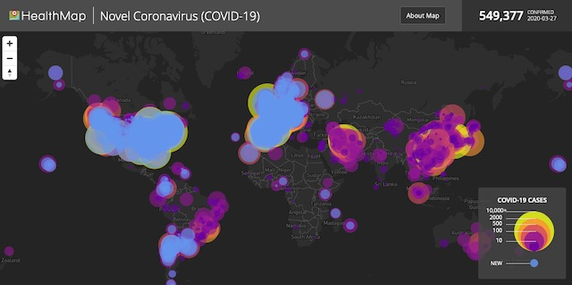

2020-03-27 08:00

An authoritative critic of the American national security state is Andrew Bacevich, West Point Class of 1969, retired Army Colonel, and historian specializing in international relations, security studies, American foreign policy, and American diplomatic and military history. Bacevich is a Professor Emeritus of International Relations and History at Boston University and President of the Quincy Institute for Responsible Statecraft.
Bacevich’s essay in TomDispatch yesterday (“America Terrorized”) makes the case that billions, and now trillions, of national treasure have been squandered annually since the 1950’s fighting largely phantom enemies. This may have turned us into a national security juggernaut but our dubious status has cost us our democracy and failed to protect us from all-too-real threats.
Read the whole thing here.
From the 1950s through the 1980s, keeping us safe provided a seemingly adequate justification for maintaining a sprawling military establishment along with a panoply of “intelligence” agencies — the CIA, the DIA, the NRO, the NSA — all engaged in secret activities hidden from public view. From time to time, the scope, prerogatives, and actions of that conglomeration of agencies attracted brief critical attention — the Cuban Bay of Pigs fiasco in 1961, the Vietnam War of the 1960s and early 1970s, and the Iran-Contra affair during the presidency of Ronald Reagan being prime examples. Yet at no time did such failures come anywhere close to jeopardizing its existence. […]
Presidents now routinely request and Congress routinely appropriates more than a trillion dollars annually to satisfy the national security state’s supposed needs. Even so, Americans today do not feel safe and, to a degree without precedent, they are being denied the exercise of basic everyday freedoms. Judged by this standard, the apparatus created to keep them safe and free has failed. In the face of a pandemic, nature’s version of an act of true terror, that failure, the consequences of which Americans will suffer through for months to come, should be seen as definitive.
Read the whole thing here.